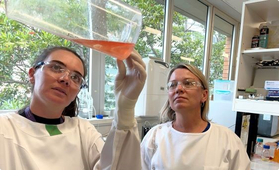

Peters Virology Lab
Home
Research
Publications
Lab Members
ISVAC Platform
Contact
Our Publications
Publications
The following are a sampling of our latest publications. For a full list, visit PUbMed.

Publication #1
A chimeric vaccine derived from Australian genotype IV Japanese encephalitis virus protects mice from lethal challenge
Review publication
Publication #1
A chimeric vaccine derived from Australian genotype IV Japanese encephalitis virus protects mice from lethal challenge
Review publication